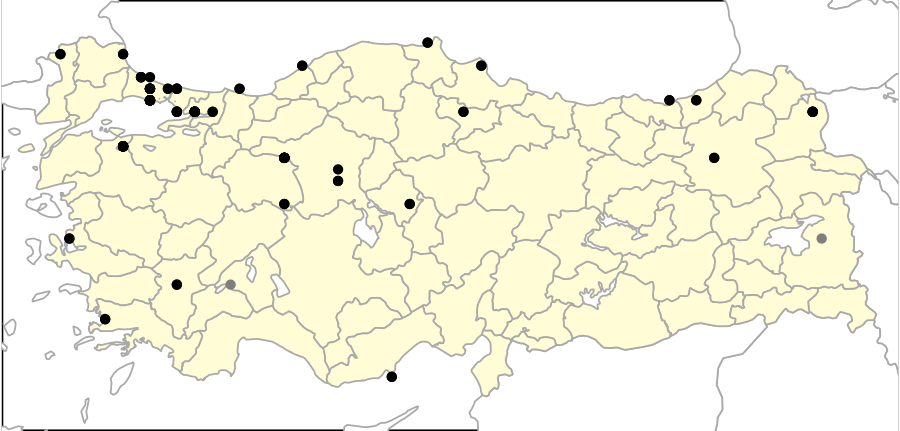

1 Ördekgiller
Boz Kaz
Anser anser, Greylag Goose
Lokal olarak az sayıda ürer. Kışın göç alır ve daha geniş bir yayılış gösterir.
Üreme döneminde az sayıda Göller Bölgesi, İç Anadolu ve Doğu Anadolu’da bataklık sulakalanlarda bulunur. Eskiden Sultansazlığı gibi birkaç alanda yüksek sayıda üremiştir. Türkiye Kuş Raporları1–11 üreyen popülasyonun son 50 yılda çok ciddi bir düşüş yaşadığını gösterir. Eskiden ürediği sulakalanların çoğu kurutulmuştur. Örneğin, Ereğli Sazlığı’nda Nisan 1970’te 120 yuva ve 300 birey varken, Temmuz 1996’da 160 birey sayılmış, bugün ise hiçbir üreyen çift kalmamıştır.
Üreme sonrasında tüy dökümü sırasında kalabalık sürüler bazı sulakalanlarda toplanır; Temmuz 1984’te Kulu Gölü’nde 800 birey, bilinmeyen bir tarihte Sultansazlığı’nda 12.000 birey ve Eylül 2004’de Kuyucuk Gölü’nde 10.000 birey kaydedilmiştir.
Geçiş sırasında tüm bölgelerde da görülen, ekimden itibaren mart sonuna kadar kalan bir kış göçmenidir. Kışlayan sürüler genellikle kıyısal bölgelerde yoğunlaşır. Son yıllarda görülen sürüler 300 bireyden azdır. KOSKS verilerine göre eskiden daha bol bulunurdu, genellikle ortalama 5000 birey, en yüksek 1967’de 11.200 birey tespit edilmiştir. Alanlarda yapılan sayımlarda Kızılırmak Deltası’nda 5000 birey, Meriç Deltası’nda 4500 birey ve Hotamış Sazlığı’nda 1500 birey tespit edilmiştir.

Üreme
Yuvalama alanı: Göllerdeki adalarda genellikle küçük gruplar halinde ürer.
Yuvası: Kulu Gölü’nde gözlenen yuvası kuru toprağa kazılmış sığ bir çukurdur ve çevredeki bitki örtüsü ve küçük tüylerle astarlanmıştır. Ereğli Sazlığı’ndaki yuvası saz ve diğer sucul bitkilerden oluşan ve su seviyesinin üstünde kalan bir yapının üzerine kurmuştur.
Yumurta sayısı: Türkiye’de yumurta sayısına ilişkin güvenilir gözlem yoktur. Yuvadan ayrılmış beş kaz yavrusu, görülen en kalabalık gruptur. Diğer ülkelerde genellikle 4-6 yumurta koyar.
Üreme dönemi: Mart sonunda yumurta koyar. En erken yavrular 23 Nisan 1988’de Kulu Gölü’nde, 27 Nisan 1988’de Sultansazlığı’nda, 30 Nisan 1968’de Mogan Gölü’nde ve 30 Nisan 1973’de Ereğli Sazlıkları’nda gözlenmiştir. 20 Nisan 1996’da Marmara’da, 14 Mayıs 1969’ta Karadeniz’de, 16 Mayıs 1970’da ve 24 Haziran 1983’te Doğu Anadolu’da kaydedilen yavrular gecikmiş üremeyi gösterir.
Alttürler ve Sınıflandırma
Ülkemizde rubrirostris alttürü bulunur. Bu alttür turuncu gagasıyla Batı ve Orta Avrupa’da bulunan pembe gagalı anser alttüründen ayrılır.
Sakarca
Anser albifrons, Greater White-fronted Goose
Lokal olarak bulunan ve zaman zaman kalabalık sürüler oluşturan bir kış konuğudur.
Ekim sonu ile nisan başı arasında lokal olarak görülen bir kış konuğudur. Genellikle ocak ve şubat ayında daha yaygın ve yüksek sayıda olur. Soğuk geçen kışlar Türkiye’de kışlayan nüfusu artar. En kalabalık sürüler Meriç Nehri boyunda, Tuz Gölü çevresinde ve Konya Ovasında yoğunlaşır. Büyük Menderes Deltası ve Doğu Akdeniz sulakalanlarında önemli sayılarda toplanabilir. Son zamanlarda Güneydoğu Anadolu’daki baraj göllerinde küçük sürüler halinde görülmeye başlamıştır. Nadiren yazın sulakalanlarda az sayıda kalabilir.
Kış ortası su kuşu sayımlarında (KOSKS) ülke genelinde en yüksek sayıda 1968-69 kışında 98.600 birey sayılmıştır. 1987’de toplam 84.000 birey kaydedilmiştir. Daha sonra kışlayan sayılar ciddi bir düşüş yaşamıştır. 1990’lı yıllarda genellikle 20.000-30.000, 1993’de 11.82212, 1999’da 395613 ve 2005’te 3891 birey14 tespit edilmiştir. Kışın soğuk geçtiği 11 Şubat 2006’de Büyükçekmece’de sayılan 15.000 birey son yıllardaki en yüksek sayımdır. Dolayısıyla, Türkiy’de kışlayan nüfusun 1970’lerde 100.000’ler seviyesinden 2010’larda 5000 seviyesine indiği tespit edilmiştir.

Üreme
Türkiye’de yuvalamaz. Avrasya ve Kuzey Amerika’nın tundra bölgelerinde yuvalar.
Alttürler ve Sınıflandırma
Türkiye’de nominat alttürü bulunur.
Küçük Sakarca
Anser erythropus, Lesser White-fronted Goose
Az sayıda gelen düzenli kış konuğudur.
Her yıl çok az sayıda kaydedilen bir kış konuğudur. Hiçbir alanda düzenli olarak bulunmadığı düşünülür. Sayıları genellikle 10’dan azdır. Çoğunlukla diğer kaz türleri ile karışık olarak bulunur. Bugüne kadar, Türkiye’ye gelen bireylerin İskandinavya’da üreyen ve Balkan ülkelerinde kışlayan göçyolu (flyway) nüfusuna ait olduğu düşünüldü. Yunanistan’da bir alanda kışlayan ve koruma çalışmaları nedeniyle sayıları artan sürünün kış ortasında oradan kaybolması, Marmara ve Ege bölgelerinde bir kışlama alanının ihtimalini doğurdu. Ancak yapılan aramalara rağmen burada düzenli ziyaret edilen bir kışlama alanı bulunamadı.
Ülkenin diğer ucunda, 20 Kasım 2004’te Haçlı Gölünde uydudan izlenen bir birey sinyal verince, doğuda bir kışlama alanın ihtimali doğdu15. Nitekim Van Gölü ve Erçek Gölü kıyılarında sayıları 340’ı bulan kalabalık sürüler düzenli olarak tespit edildi. Bugün ülkede kışlayan ana nüfusun Doğu Anadolu’da bulunduğu söylenebilir16.
2000 öncesindeki kayıtlara bakıldığında; 29 Aralık 1997’de Göksü Deltası’nda bir birey6, 23 Ocak 1993’te Göksu Deltası’nda bir birey12, 6 Nisan 1990’da Seyfe Gölü’nde 12 birey9, 24 Aralık 1986’da Bafa Gölü’nde bir erişkin iki genç17 ve 16 Şubat 1967’da Kocabaş Çayının ağzında (Çanakkale) iki birey1 kaydedilmiştir. 1945 ile 1965 ve ekim ile ocak arasında büyük çoğunluğu Büyükçekmece ve Küçükçekmece göllerinden gelen 12 kaydı vardır. Ancak bu kayıtlar tür tanımını destekleyecek belgeden yoksundur18.

Üreme
Türkiye’de yuvalamaz. Kuzey İskandinavya’dan Doğu Sibirya’ya uzanan tundra kuşağında ürer.
Alttürler ve Sınıflandırma
Monotipik bir türdür.
Tundra Kazı
Anser serrirostris, Tundra Bean Goose
Nadiren gelen kış konuğudur.
2000 yılından sonra üç kere kaydedilmiştir. Birer birey 26 Şubat 2013’te Yedikır Barajı’nda, 4-21 Şubat 2015’te Kızılırmak Deltası’nda ve Manyas Gölü’nde 2 birey görülmüştür. Tür kış aylarında sakarca sürüleri arasında bulunabilir.
Tundra Kazı, önceleri Tayga Kazı ile beraber tek bir tür altında Tarla Kazı olarak sınıflandırılırdı. Dolayısıyla, taksonomik revizyonun yapıldığı tarihin öncesindeki kayıtlarda Tarla Kazı olarak tanımlanmıştır. 2000’den sonra çekilen fotoğraflarda özellikle gaga renklenmesi incelenmiş, bu kuşların hepsi Tundra Kazı olarak tanımlanmıştır. Fotoğrafı veya betimlemesi olmayan eski kayıtların hangi türe ait olduğu belirsiz kalacaktır.
Tarla Kazı olarak tanımlanmış kuşlar Ege, Akdeniz ve İç Anadolu’daki sulakalanlarda ara sıra yüksek sayılarda kaydedilmiştir. 1870’ler ve 1880’lerde Mersin’de toplanan bireyler19 ilk kayıtlarıdır. 1966-2000 arasında çoğunlukla ocak ile mart arasında 15 kez kaydedilmiştir. 2 Mart 1965’te Ereğli ve Karapınar arasında 90 birey18, 15-16 Ekim 1969’da Karamık Sazlıklarında 13 birey2, 30 Nisan 1988’de Seyfe Gölü’nde, 30 Ocak 1992’de Marmara Gölü’nde 61 birey, 9 Ocak 1993’te Büyükçekmece Gölü’nde 64 birey12 ve 24 Ocak 1993’te Göksu Deltası’nda bir birey12 kaydedilmiştir. Türkiye’deki kışlayan Sakarca sayılarındaki sert düşüş muhtemelen Tarla Kazı olarak tanımlanmış kuşlar için de geçerlidir.

Üreme
Türkiye’de yuvalamaz. Üreme alanı Kuzey İskandinavya’dan Doğu Sibirya’ya uzanan tundra kuşağındadır.
Alttürler ve Sınıflandırma
Tayga Kazı yeni bir türdür ve yakın zamana kadar Tarla Kazı olaran bilinen bir türden ayrılmıştır. 5 alttürden oluşan Tarla Kazı (Anser fabalis) ikiye ayrılınca fabalis, johanseni ve middendorffii alttürleri Tayga Kazı (Anser fabalis), serrirostris ve rossicus alttürleri Tundra Kazı (Anser serrirostris) altında sınıflandırılmıştır.
Yosun Kazı
Branta bernicla, Brant Goose
Rastlantısal konuktur.
Batı Avrupa’da Atlantik kıyılarında kışlayan bir türdür. Türkiye ve yakın coğrafyasında rastlantısal konuktur. 6 Nisan 1981’de Küçük Menderes Deltası’nda iki birey5, 3-4 Eylül 1973’te Ardeşen açıklarında koyu karınlı bernicla alttürüne ait iki birey kaydedilmiştir3. 1969 yılında Acıgöl’den gelen bir iddia kabul edilmemiştir20. 7 Şubat 1945’de Büyükçekmece’de bir bireyi Prenses Zeyneb Halim vurmuştur, maalesef bu kuşun gövdesi korunamamıştır18. Kışın soğuk geçtiği Ocak 1889’da düzenli olarak İstanbul Maltepe’de ve Şubat 1891’de büyük sürüler halinde İstanbul Kadıköy’de görülmüştür21.

Üreme
Türkiye’de yuvalamaz. Orta ve Kuzey Sibirya’da Kuzey Kutup Denizi kıyı şeridinde yuvalar.
Alttürler ve Sınıflandırma
Bir kayıtta bernicla alttürü tanımlanmıştır. Kuzeybatı Avrupa’da kışlayan bernicla alttürünün Türkiye’de görülmesi makuldür. Yunanistan’daki bir kaydı da bu alttüre aittir22.
Ak Yanaklı Kaz
Branta leucopsis, Barnacle Goose
Rastlantısal konuktur.
5 Ocak 2003’te Büyükçekmece Gölü’nde bir birey gözlenmiş ve detaylı olarak belgelenmiştir. 1946/47 kışında Sakarya Deltası’nda bir birey, 1961 sonbahar/kışında diğer bir birey vurulmuş, ikinci kuşun tahniti Eylül 1964’de Ankara’ya bulunmuş, ancak sahibi satmayı reddetmiştir23. Bu iki kaydın dökümantasyonu yetersizdir18.

Üreme
Türkiye’de yuvalamaz. Grönland, İzlanda, Kuzey Batı Rusya ve Baltık Denizi kıyılarında yuvalar.
Alttürler ve Sınıflandırma
Monotipik bir türdür.
Sibirya Kazı
Branta ruficollis, Red-breasted Goose
Az sayıda gelen düzensiz kış konuğudur.
Özellikle soğuk kışlarda bazı bireyler veya gruplar Türkiye’ye inerler ve düzensiz olarak görülürler. Türkiye’de düzenli kışladığı bir alan yoktur. Ana kışlama alanı Romanya ve Bulgaristan’ın Karadeniz kıyı şerididir. 1964 ila 2008 arasında 64 kaydı bilinir. Bu kayıtların Marmarada 15 kayıt, İç Anadolu’da 12 kayıt, Karadeniz’de 8 kayıt, Akdeniz’de 6 kayıt ve Ege’de 4 kayıt alınmıştır. Kayıtların çoğu aralık sonu ile şubat başı arasından gelir. Bu kayıtların çoğunda bir veya birkaç kuş sayılmışi ancak 5 tanesinde 40 ila 100 bireylik kalabalık sürüler de gözlenmiştir. 2001/2002 kışında ülke toplamında 192 birey sayılmıştır.
Ülke genelinde yaygın olarak av mağazaları ve avcılık kulüplerinde tahnitlerine rastlanması ve avcıların gözlem beyanları24 kayıtların işaret ettiğinden çok yaygın olduğunu gösterir. İç Anadolu’dan gelen eski kayıtlar, Kış Ortası Su Kuş Sayımlarında kalabalık kaz sürülerinin sistematik incelenmesi ile ortaya çıkmıştır. Sakarca sürülerinin içinde olabilecek bireylerin farkedilmeme ihtimali yüksektir.
1946/47 kışında Küçükçekme’de Kosswig tarafından gözlenmiştir23. 1947 veya 1954 yılında kış boyunca (27 Kasım - 6 Mart) Büyükçekmece ve Meriç Nehri (?) arasında düzenli olarak 9 birey ve Beylik Mandra’da 2 birey kaydedilmiştir18. 1959 yılında belirtilmemiş bir alanda sekiz İshakoğlu tarafından birey gözlenmiş ve bir birey vurulmuştur25. 12 Kasım 1964’de Kuyucuk Gölü’nde 2 erişkin ve bir genç birey 400 boz kazın arasında kaydedilmiştir26. 17 Ocak 1965 tarihinde Çekmece’de E. Hirzel tarafından üç birey görülmüştür.
Türkiye’den açıklamaya ihtiyaç duyulan bir yaz veya üreme kaydı vardır. 5 Ağustos 1982’de Erçek Gölü’nde 14 erişkin ve sekiz yavru kaydedilmiştir27. Bu kayıt ya hatalı bir kayıt olarak unutulmalı, ya da avcılar tarafından yakalanmış ve evcilleştirilmiş kuşların üretilmesinin bir sonucu olarak yorumlanmalıdır.


Üreme
Türkiye’de yuvalamaz. Doğu Sibirya’da tundra kuşağında yuvalar.
Alttürler ve Sınıflandırma
Monotipik bir türdür.
Sessiz Kuğu
Cygnus olor, Mute Swan
Lokal olarak az sayıda yuvalar. Yaygın olarak ve nispeten çok sayıda bulunan bir kış konuğudur.
Üreme kayıtlarının çoğu 3 alandan gelir: Gala Gölü, Gediz Deltası ve Kızılırmak Deltası. Ulusal üreme popülasyonu muhtemelen 20 çiftten daha azdır. Kızılırmak Deltası’ndan ilk muhtemel üreme kaydı 1968 yılında alınmıştır24.
Geçmişte birkaç alanda üreyen yüzlerce çiftlik bir nüfus bulunuyordu. Marmara Gölü’nde 50 çift, Akşehir Gölü’nde 100 çift üremiştir28. Ereğli Sazlığı en çok gözlem kaydının alındığı alandır. Lenz burada 1968’de 11 yuva, 1969’da bir yuva ve 1970’de üç yuva bulmuştur. Buradaki sulakalanın yokolması ayrıntılı olarak belgelendiği için29, üreyen nüfusun azalışı da gözlenmiştir. Eski üreme alanlarında yok olmasının ana nedeni sulakalanların kurutulmasıdır.
Kışın Karadeniz ve Marmara ve Ege Bölgesinde yaygın olarak en yüksek sayılarda gözlenir. Toplam kışlama popülasyonu 1000-10000 birey arasındadır. Meriç Deltası ve Gala Gölü ülke nüfusunun çoğunun toplandığı alandır, burada 1993’de 1244 birey12 1999’da 8900 birey13 ve 2003’te 2000 birey sayılmıştır. Kışın sert geçtiği yıllarda sayısı artar, 1999’da ülke toplamında 9088 birey kaydedilmiştir.

Üreme
Yuvalama alanı: Geniş sazlık alanlar ve göl açıklığı bulunan büyük göller ve bataklıklardır.
Yuvası: Türkiye’deki bir yuvanın tarifi yapılmamıştır. Diğer yerlerde yuva su kenarında zemin üzerinde, küçük bir adacıkta veya sığ sudaki sazların üstüne kurulur. Yuva saz ve diğer sucul bitkilerden oluşan büyük bir yığının ortasındaki çukura kurulur.
Yumurta sayısı: Türkiye’de yumurta gözlemi yoktur. Türkiye dışında 5-7 yumurta koyduğu bilinir.
Üreme dönemi: Nisan başında yumurta koyar, mayıs ve temmuz arasında yavrular gözükür. 13 Mayıs 1899’da İzmir’de saz yatağında yuvalan bir çift kaydedilmiştir30. 6 Temmuz 1976’da Ereğli Sazlığında bir çift ve 4-5 genç yavru, 17 Temmuz 1982’de bir çift ve dört genç ve 16 Mayıs 1987’de yumurtadan yeni çıkmış yavrular gözlenmiştir.
Alttürler ve Sınıflandırma
Monotipik bir türdür.
Küçük Kuğu
Cygnus columbianus, Tundra Swan
Lokal olarak ve az sayıda bulunan bir kış konuğudur.
1993 yılına kadar nadir bir kış konuğu olduğu düşünülmüştür. Daha sonra ilk önce Burdur Gölü ve Göller bölgesinde, ardından Meriç Deltası düzenl bulunduğu tespit edilmiştir. Meriç Deltası’nda karışık ve kalabalık kuğu sürüleri içinde sayıları 1000’e ulaşabilir. İç Anadolu, Göller Bölgesi’nda küçük gruplar halinde bulunur. Ekseriyetle kasım ve nisan arasında bulunur.

Üreme
Türkiye’de yuvalamaz. Türkiye’de kışlayan kuşların üreleme alanının ve göç koridorları tespit edilmiştir31. GPS ve GMS vericileri ile 2015-2017 yılında yapılan çalışmada yuvalama alanlarının Yamalo-Nenets özrek bölgesindeki Yamal olduğu, göçleri sırasında Ob Koyu, Turgay Ovaları, Kuzey Hazar Kıyıları, Azov Denizi gibi durak alanlar üzerinden göç ettikleri ortaya çıkmıştır.
Alttürler ve Sınıflandırma
Ülkemizde Eski Dünya’da yaşayan bewickii alttürü bulunur ve gaga kökü ve yüz derisi sarıdır. Amerika’da yaşayan columbianus alttürü siyah gaga ve siyah yüz derisi ile kolaylıkla ayırt edilebilir.
Ötücü Kuğu
Cygnus cygnus, Whooper Swan
Yaygın olarak ve az sayıda görülen bir kış konuğudur.
Ekim sonu ve nisan başı arasında yaygın olarak az sayıda görülen bir kış konuğudur. Ocak ve şubat aylarında en yüksek sayıya ulaşır. Trakya’da Meriç Deltası ana toplama bölgesi ve türün Balkanlar’daki en önemli kışlama alanıdır. 25 Ocak 1998’de bulunan 1200 birey Türkiye’deki en yüksek sayıdır.32 Türkiye’ye gelen kuşlar Ukrayna ve Kırım ile Batı Karadeniz Bölgesi arasındaki deniz üzeri göç rotasını kullanır33. Doğuda 30 Ekim 1995’de Sodalı Gölü’nde 164 birey34, 1992’de Diyarbakır Kabaklı Barajı’nda 133 birey35 kaydedilmiştir.

Üreme
Türkiye’de yuvalamaz. Avrasya’nın kuzeyinde yuvalar.
Alttürler ve Sınıflandırma
Monotipik bir türdür.
Nil Kazı
Alopochen aegyptiaca, Egyptian Goose
Durumu belirsizdir. Çoğunlukla egzotik tür kategorisinde değerlendirilir.
28 Nisan 1986’da Kulu Gölü’nde bir birey gözlenmiş, kuşun doğal ve rastlantısal konuk olduğu düşünülmüştür. 11 Nisan 1911’de Urfa’nın güneyinde iki birey gördüğünü söyleyen Weigold’un (1912-13) kaydı ise kabul görmemiştir36.
İstanbul ve Ankara’da gözlenen kuşların esaretten kaçtığı düşünülür. 6-13 Temmuz 2002’de Ankara’daki bir parkta bir çift fotoğraflanmış, 31 Mart 2012’de İstanbul Riva’da bir çift, 13 Mart 2012’de Ankara Hacettepe Kampüsü’nde, 5-24 Kasım 2013’de Etimesgut’ta ve 25 Mayıs-13 Haziran 2014’da Eymir Gölü’nde birer birey gözlenmiştir.
1906 ve 1928 arasında Kıbrıs’ta nadir rastlanan bir kış göçmeni olarak değerlendirilmiş, 1958, 1962 ve 1989 yıllarında bireyler gözlenmiştir. Eskiden Suriye ve Filistin’de ürediğini düşünülmüş37, sonrasında Suriye’de hiçbir güvenilir kaydı olmadığına karar kılınmıştır38,39.

Üreme
Türkiye’de yuvalamaz. Afrika’da çoğunlukla Sahra Altında yuvalar.
Alttürler ve Sınıflandırma
Monotipik bir türdür.
Suna
Tadorna tadorna, Common Shelduck
Lokal olarak az sayıda ürer. Lokal olarak çok sayıda bulunabilen bir kış konuğudur.
Ege Bölgesi, Göller Bölgesi, İç ve Doğu Anadolu’da geniş ve tuzlu sulakalanlarda ürer. Başlıca üreme alanları Gediz Deltası, Bolluk, Kulu ve Tuz Gölleri ve Van Gölü çevresidir. Gediz Deltası’nda 1996 yılında üreyen popülasyonun 8 çift olduğu tahmin edilmiş40. 24 Haziran 1992’de Bolluk Gölü’ndeki bir adada 12 yuva bulunmuştur.
Üreme sonrası tüy değiştiren kuşlar ağustos-ekim arasında toplanırlar, Erçek Gölü’nde 2500 birey, Kulu Gölü’nde 700 birey sayılmıştır.
Kışlayan toplam nüfus genellikle 1000-5000 bireydir, ana kışlama alanı Yumurtalık Lagünü’nde 16 Şubat 2006’da 5390 birey sayılmıştır. Acıgöl’de 1969-70’de 3450 birey, 1968-69’da 4900 birey, 2004’te 1802 birey ve 2005’te 2928 birey sayılmıştır. Diğer alanlarda daha küçük topluluklar oluşturur.

Üreme
Yuvalama alanı: Geniş, sığ ve tuzlu sulakalanlarda adalar, sedde duvarları ve çalı altlarında yuvalar.
Yuvası: Avrupa’da yuvaların çoğu tavşan oyuklarında, tünelin 1-2 m içinde bulunur. Buna karşın Türkiye’deki yuvalar yerdedir. Bolluk Gölü’ndeki yuvaların bazıları tamamen açıkta, bazıları kısmen ya da tamamen çalı altında ve bir tanesi doğal bir oyuğun içinde bulunmuştur.
Yumurta sayısı: 6-9 yumurta koyduğu gözlenmiştir. Bolluk Gölü’ndeki yuvalarda gözlenen 10-18 yumurtanın birden çok dişi tarafından konulmuş olması muhtemeldir.
Üreme dönemi: Gediz Deltasında haziran başında yavrular görülmüştür40. İç Anadolu’da nisan sonu ile haziran başında yuvalar. Doğu Anadolu’da haziran ortasında yumurtladığı düşünülmektedir.
Alttürler ve Sınıflandırma
Monotipik bir türdür.
Angıt
Tadorna ferruginea, Ruddy Shelduck
Yaygın ve çok sayıda bulunan yerli türdür. Kışın göç alır, sayıları artar.
Üremek için Genellikle yüksek kesimlerdeki küçük gölcükler, baraj gölleri, ıslak çayırlar ve dereleri seçer, birçok ördek ve kaz türünün aksine büyük sulakalanlarda bulunmaz. İlk tahminde üreyen popülasyonun 4000 ile 8000 çift arasında olduğu öne sürmüştür41. Sonrasında kış ortası su kuşu sayımlarına dayanarak azaldığı düşünülmüştür. Üreyen popülasyonun 1200-5100 çift olduğunu tahmin etmiştir42.
Temmuz eylül arasında tüy değişimi için bazı sulakalanlarda büyük sürüler halinde toplanır. Erçek Gölü’nde 20.000 birey, Sultan Sazlığı’nda 11.000 birey, Kulu Gölü’nde 10.000 birey, Eylül 1936’da bugün kurutulmuş olan Emir Gölü’nde 10.000-15.000 birey sayılmıştır. Kış öncesinde Kasım 2004’de Sarıyar Barajı’nda 8.000 birey ve Kuyucuk Gölü’nde 6.000 birey kaydedilmiştir.
Kış aylarında daha yaygın olarak görülür. En yüksek kış sayımında ülke toplamında 10.115 birey14, genellikle 4000-4500 birey sayılmıştır. Ocak-Şubat 1993’te sadece 711 birey, sadece Sarıyar Barajı’nda 18 Ocak 2004’te 5636 birey ve 18 Şubat 2006’da 7641 birey kaydedilmiştir. Bir yandan İç Anadolu’da üreme sonrası toplanan sürülerde bir azalma görülmüş, diğer yandan baraj göllerinin sayısındaki artış gözlenmiştir. Kış sayımı toplamlarının yaz sonu toplamlarından az olması, dağınık şekilde kışladığına veya kış ayında güneye göç vermesine bağlanabilir. Toplam kışlayan nüfusun 2600 ile 28.500 birey arasında değiştiği düşünülmüştür42.

Üreme
Yuvalama alanı: Genellikle göl kenarlarındaki sarp kayalıklarda ve tepelerde, yamaçlardaki çukur ve çatlaklarda olmak üzere açık alanlarda ürer. Sıkça kayalıklarda yuvalar. Beyşehir Gölü’ndeki bir adada kayaların ve harabelerin taşları arasında ürediği kaydedilmiştir. 22-24 Mayıs 1998’de Ereğli yakınlarındaki bir kayalıkta muhtemelen eski bir Kızıl Şahin yuvasında kuluçkaya yatmış bir dişi gözlenmiştir.
Yuvası: Yuvası Türkiye’de tanımlanmamıştır, genellikle bitki artıkları, hav tüyleri ve bazı diğer tüylerle kaplanmış bir oyuktur. 30 Nisan 2003’te Akköy yakınındaki dik bir yamaçtaki muhtemelen bir tavşan yuvası olan oyuğa giren bir dişi gözlenmiş, ancak oyuğun derin olması nedeniyle yuva incelenememiştir.
Yumurta sayısı: 8-12 yumurta koyduğu görülmüştür.
Üreme dönemi: Akdeniz ve Ege’de mart sonu yumurta koyar. Kuluçka diğer bölgelerde nisan ve mayıs arasında başlar.
Alttürler ve Sınıflandırma
Monotipik bir türdür.
Boz Ördek
Mareca strepera, Gadwall
Lokal olarak birkaç alanda yuvalar. Yaygın olarak orta sayılarda bir kış konuğudur.
En önemli üreme alanı Kızılırmak Deltası’nda 200 çift ürer. Türkiye’de toplam üreyen popülasyonun 500 ile 5000 çift arasında olduğu düşünmüştür41. Bugüne gelindiğinde sayılarının azaldığı ortadadır.
İç Anadolu’daki ilkbahar geçişi marttan nisan başına kadar belirgindir. Akdeniz’deki kıyısal sulakalanlarda nadiren 1000’den yüksek sayılarda gözlenir. Kış ortası sayımlarda 1967’de Manyas Gölü’nde 5000 birey, 1969’da Akşehir Gölü’nde 7500 birey ve 1971’de Hotamış Sazlığı’nda 2490 birey sayılmıştır. 1967-73 arasında ülke genelinde çoğunlukla 3000’den fazla kaydedilmiştir. 1986-2005 arasında toplam sayı 1000-1500 seviyesine düşmüş, son yıllarda tekrar artmış, 2020 kışında Kızılırmak Deltası’nda 10.000 bireyden fazla sayılmıştır.

Üreme
Yuvalama alanı: Göl kıyılarında ve adalarındaki yoğun vejetasyon içinde; sazlıklarda ve sık bitkilerle kaplı taşkın alanlarında ürer. Kızılırmak Deltası, Karamık Gölü, Kulu Gölü, Bolluk Gölü, Mogan Gölü, Ahlat Sazlıkları, Haçlı Gölü ve Van Gölü’nde yuvalamıştır.
Yuvası: Yuva yerde bir çukura kurulur, bitkisel malzeme ve dişinin tüyleriyle kaplanır.
Yumurta sayısı: Türkiye’deki yuvalarda yumurta sayısı 6-15 arasındadır. İç Anadolu’da 7-15 yumurtalı yuvalar görülmüş, bu yumurtaların 1 ila 6 tanesi başka ördeklerin koymuş olduğu tespit edilmiştir. Kulu Gölü’ndeki yuvalarda 6 Mayıs 1972’de 3-11 yumurta ve 14 Temmuz 1971’de 7 yumurta sayılmıştır43. 17 Mayıs 2004’te Bolluk Gölü’ndeki bir yuvada 8 yumurta bulunmuştur.
Üreme dönemi: Kızılırmak Deltası’nda nisan başında yumurta koyar44. İç Anadolu’da nisan sonu ile temmuz arasında, Doğu Anadolu’da haziran ile eylül arasında yavrulara rastlanmıştır.
Alttürler ve Sınıflandırma
Türkiye’de nominat alttürü bulunur. Eskiden Anas cinsi altında sınıflandırılırdı.
Fiyu
Mareca penelope, Eurasian Wigeon
Yaygın olarak çok sayıda bulunan kış konuğu ve geçit türüdür.
Ege, Akdeniz ve İç Anadolu’nun sulakalanlarında kalabalık sürüler halinde kışlar. 1960’lı ve 70’li yıllarda düzenli olarak ortalama 150.000 birey sayılmıştır. En yüksek sayıda 1968’de 208.600 birey, 1969’da 458.800 birey kaydedilmiştir. Bugünlere gelindiğinde ciddi bir düşüş yaşamıştır. 1986 ile 2005 arasındaki düzenli sayımlarda sadece dört yıl 40.000’dan fazla birey kaydedilmiştir. Çoğunlukla eylül sonunda gelir, nisan sonuna kadar kalır.
İç Anadolu’da mart sonu ve nisan başı arasında yüksek sayıda geçer. Bazı göçmenler mayıs sonuna kadar kalır. Nadiren Doğu Anadolu’da ve muhtemelen İç Anadolu’da üremeden yazı geçirebilir.

Üreme
Türkiye’de yuvalamaz. Kuzey Avrupa’da yuvalar.
Alttürler ve Sınıflandırma
Monotipik bir türdür. Eskiden Anas cinsi altında sınıflandırılırdı.
Yeşilbaş
Anas platyrhynchos, Mallard
Yaygın olarak üreyen yerli bir türdür. Kışın göç alır, yüksek sayılara ulaşabilir.
Uygun yaşamalanının bulunduğu coğrafyalarda yaygın olarak az sayıda yuvalar. En yaygın olarak İç Anadolu Bölgesi sulakalanlarında rastlanır, diğer bölgelerde çok lokal olarak bulunabilir. En yüksek sayıda yuvaladığı alan 400-600 çiftin kaydedildiği Kızılırmak Deltası olmuştur44.
Sonbaharda göç alır ves sayıları artar. Kışlayan gruplar nisan başına kadar kalır. En yüksek sayılarda Karadeniz, Marmara ve Ege sahil kuşağında kaydedilir. Akdeniz ve İç Anadolu’da nispeten az sayıda, Güneydoğu Anadolu ve Doğu Anadolu’da az sayıda bulunur. 2000 ve 2020 arasında kışlayan nüfus ortalama 20.000 birey seviyesinde olsa da, kışın soğuk geçtiği 2005 yılında ülke genelinde toplam 106.140 birey ve Kızılırmak Deltası’nda 50.000 birey sayılmıştır.
1960 ve 70’li yıllarda kışlayan nüfusun 100.000’ler seviyesinde olmuştur. 1967’de Kızılırmak Deltası ve Yeşilırmak Deltası’nda yaklaşık 52.000 ve Büyük Menderes Deltası’nda 42.000, 1968’de Manyas ve Uluabat göllerinde 42.000, 1969’da Büyük Menderes Deltası’nda 80.000, Akyatan Lagünü’nde 40.000 ve Amik Gölü’nde 30.000, 1970’de Meriç Deltası’nda 34.500 ve Sultansazlığı’nda 30.000 birey sayılmıştır.

Üreme
Yuvalama alanı: Göl ve nehirlerdeki adacıklarda, sazlıklarda, veya göl, sazlık veya subasar çayırların kıyılarındaki sık bitkilerin içinde ürer.
Yuvası: Yuvasını genellikle bitki örtüsünün altına, topraktaki bir oyuğa kurar. Başka bölgelerde ağaç kovuğuna yuvaladığı veya ağaçtaki, örneğin karga gibi, bir kuş yuvasını kullandığı bilinir. Bu tip yuvalara Türkiye’de henüz rastlanmamıştır.
Yumurta sayısı: Genellikle 5-9 yumurta koyar, ancak yumurta sayısı 2-14 arasında olabilir. Bir yuvadaki yumurtaların 14’ten fazla olması, birden fazla dişinin aynı yuvaya yumurtladığını gösterir.
Üreme dönemi: Kıyı bölgelerinde marttan itibaren, diğer bölgelerde nisan veya mayısta yumurtlar. Yavrular mayıs başından temmuz sonuna kadar görülebilir. MAR. 18 Nisan 1993’te Kocaçay Deltası’nda yavrularıyla gözlenen bir dişi en erken üreme kaydıdır45. KAR. 19-20 Mayıs 1992’de Yeniçağa Gölü’nde hem yuvadaki yumurtalar hem de yavrular gözlenmiştir. 5 Mayıs 1992’de Kızılırmak Deltası’nda ilk yavrular gözlenmiştir44. 16 Mayıs 1967’de Manyas Gölü’nde dokuz yumurtalı bir yuva kaydedilmiştir. 20 Haziran 1973’te Trakya’da altı yavrulu bir dişi gözlenmiştir. İÇA. 1971’de Yarma’daki birçok yuvada diğer türlerin yumurtalarına rastlanmıştır, örneğin, bir yuvada 17 Yeşilbaş, üç Boz Ördek ve üç Macar Ördeği yumurtası tanınmıştır. 13-15 Temmuz 1971’de Kulu Gölü’nde sekiz yuva incelenmiş, yuvalarda 2-12 sayılmış43, başka bir tarihte mayıs ve haziranda yumurtalı yuvalar ve mayıs ortasından itibaren yavrular gözlenmiştir. DOA. En erken kayıt 14 Haziran 1968’de Erçek Gölü’nde kaydedilen yavrulardır. Aynı yerde, 28 Haziran 1968’de beş ve sekiz yumurtalı iki yuva bulunmuş27 ve 9 Haziran 2001’de Balık Gölü’nde yumurtalı iki yuva kaydedilmiştir.
Alttürler ve Sınıflandırma
Türkiye’de nominat alttürü bulunur.
Kaşıkgaga
Spatula clypeata, Northern Shoveler
Lokal olarak az sayıda yuvalar. Yaygın olarak çok sayıda bulunan bir geçit türü ve kış konuğudur.
İç Anadolu ve Doğu Anadolu’daki birkaç büyük sulakalanda ve Kızılırmak Deltası’nda yuvalar46. 1970’lerde Kulu Gölü, Kızılırmak Deltası bilinen üreme alanlarıdır.
Tüm bölgelerde yaygın ve bol olarak kaydedilen bir geçit türüdür. Göçmen gruplar ilkbaharda mart başından nisan sonuna kadar ve sonbaharda eylül ortasından kasım başına kadar zaman zaman yüksek sayılarda görülür. Eylülde Kulu Gölü’nde 7000 birey, Sultansazlığı’nda 9000 birey, mart sonunda Kızılırmak Deltası’nda 4500 birey sayılmıştır.
Ülkenin batı ve orta bölgelerinde kışlar. 2000 ile 2020 arasında toplam kışlayan kuş sayısı çoğunlukla 5000 bireyden az olmuştur, kışın soğuk geçtiği 2005’te 13.576 birey sayılmıştır. Eskiden daha yüksek sayılar kışlardı, 1993’te toplam 7898 birey, 1999’da 13.114 birey kaydedilmiştir. Geçmikteki yüksek sayımları şöyledir; 1967’de Büyük Menderes Delta’sında 23.000 birey, Kızılırmak Deltası’nda 8000 birey, 1993’te aynı yerde 4564 birey ). 1967-73 yılları arasında İç Anadolu’daki birçok alanda sayıları 3000’i bulan sürülerin kaydı kaydedilmiştir.

Üreme
Yuvalama alanı: Büyük sulakalanlarda yuvalar.
Yuvası: Kulu Gölünde bir adadaki cılız vejetasyonun içinde yuvalamıştır. Çıplak zeminde sığ bir oyuğun içindeki yuva ot ve bitki gövdeleri ile karışık olarak hav tüyleri ile kaplıdır.
Yumurta sayısı: 8-10 yumurta koyduğu kaydedilmiştir.
Üreme dönemi: Türkiye’de üremenin sezonu ile ilgili güvenle yorum yapabilecek yeterli veri yoktur; diğer yerlerde üreme sezonunun başlaması nisan başından mayıs sonuna kadar değişkenlik gösterebilir. KAR. 6-7 Temmuz 1972’de Kızılırmak Deltası’nda dört ve beş yavrulu iki dişi kaydedilmiş24, 1992’de ürediği kanıtlanamadığı için popülasyonun 0-1 çift olduğu tahmin edilmiştir44. 1971 Temmuz ortasına ait yumurtalı yuva kayıtları başarısız bir üremenin ardından ikinci teşebbüs olarak değerlendirilmelidir. İÇA. 14-15 Temmuz 1971’de Kulu Gölü’ndeki bir adada sekiz ve on yumurtalı iki yuva bulunmuş, 5-6 Ağustos 1972’de iki ve dört yavrulu iki yavru grubu görülmüştür43. 31 Mayıs 1987’de Kulu Gölü’nde yavrular gözlenmiş ve 19 Haziran 1992’de dokuz yumurtalı bir yuva bulunmuştur. Haziran 1977’de Eşmekaya’da beş yavrusuyla birlikte bir dişi gözlenmiştir47. DOA. 29 Mayıs 1969’da Van Gölü’nde kur davranışı gözlenmiştir.
Alttürler ve Sınıflandırma
Monotipik bir türdür.
Kılkuyruk
Anas acuta, Northern Pintail
Nispeten yaygın olarak bulunan bir geçit türü ve kış konuğudur. Nadiren yuvalar.
Son yıllarda tek bir alanda yuvaladığı bilinir; 1998 ve 1999’da Girdev Gölü’nde üremiştir. İlkbaharda ve yazın İç Anadolu’da birçok erişkin kaydı olsa da, kanıtlanmış üreme kayıtları az sayıdadır. Üreyen popülasyonun 500 ile 1000 çift olması iddiası tamamen geçersizdir41.
Genellikle eylül ortasından nisan başına kadar batı ve orta bölgelerinde görülür. Geçit yapan kuşların görülme dönemleri ve sayıları hakkında bir bilgi derlenmemiştir.
Ülke genelinde kışlayan nüfus 10.000 bireyden azdır. 1986’da toplam 25.700 birey, 1992’de 11.070 birey ve 1999’da 13.573 birey kışlamıştır. Kışlama popülasyonunda çarpıcı bir azalma belgelenmiştir. 60’li yıllarda düzenli olarak 100.000’in üzerindeki sayılarla kaydedilirdi. Örneğin, 1967’de Büyük Menderes Deltası’nda 60.000 birey, Emir Gölü’nde 70.000 birey, 1969’da Akyatan Gölü’nde 100.000 birey ve Gâvur Gölü’nde 50.000 birey kaydedilmiştir. Bilhassa ılıman geçen kışlarda daha yüksek sayılarda kaydedilebilir. Eski tarihlerde bazı alanlardaki sayımların sonuçlarının güvenilirliği sorgulanabilir, örneğin, 1970’de Sultansazlığı’ndaki sayılan 160.000 birey muhtemelen abartılı bir tahmindir. Bu ve diğer ördek türlerinin önemli sayılarda kışladığı birkaç sulakalan kısmen ya da tamamen kurutulmuş durumdadır. Diğer yandan son yıllarda oluşan baraj göllerinde kışlamaya başlamıştır.

Üreme
Yuvalama alanı: Büyük göllerde ve sulakalanlarda yuvalar.
Yuvası: Kulu Gölü’ndeki büyük adanın kenarlarındaki vejetasyonun içinde yuvalamıştır. Yerdeki bir delikte yaptığı yuvasını bitkisel malzeme, hav tüyü ve biraz tüyle kaplar.
Yumurta sayısı: 6-10 yumurta koyduğu kaydedilmiştir.
Üreme dönemi: Görünüşe göre mayıs ayında yumurtlar. KAR. Kızılırmak Deltası’nda üreme davranışları gözlense de ürediği kesin olarak kanıtlanamamıştır44. AKD. Hem Haziran 1998 ve Haziran 1999’da Girdev Gölü’nde yavrular gözlenmiştir. İÇA. 22 Mayıs 1992’de Kulu Gölü’nde yedi ve on yumurtalı iki yuva, 19 Haziran 1992’de 6 ila 9 yumurtalı beş yuva bulunmuştur. 24 Haziran 1992’de Bolluk Gölü’ndeki bir çalının altına gizlenen yuvada 11 yumurta sayılmıştır.
Alttürler ve Sınıflandırma
Türkiye’de nominat alttürü bulunur.
Çıkrıkçın
Spatula querquedula, Garganey
Yaygın olarak az sayıda üreyen bir yaz göçmenidir. Göç döneminde daha yaygın ve çok sayıdadır. Nadiren kışlar.
Ördeklerin arasında esasen yaz göçmen olan tek türdür. Şubat ortasından itibaren görülmeye başlar, ekim sonuna kadar kalır. Leylekle beraber en erken gelen yaz göçmenlerindendir. Sazlık sulakalanları tercih eder, en yoğun ürediği alanlar İç ve Doğu Anadolu’da bulunur. Güneydoğu Anadolu’da potansiyel olarak iki üreme alanı tanımlanmıştır.
Göçmen sürülerin geçişi şubat sonundan mayıs sonuna kadar devam eder. Hem ilkbaharda hem de sonbaharda tüm bölgelerde yüzlerce, hatta binlerce bireylik sürüler halinde görülebilir. Ağustos sonu ve eylül başı arasında Karadeniz kıyıları boyunca göçmen sürülere rastlanır.
Nadiren Marmara, Ege ve Akdeniz’de az sayıda kışlar. Olağandışı yumuşak geçen 1968-69 kışında Göksu Deltası’nda 3000 birey ve Gâvur Gölü’nde 5000 birey sayılmıştır. Güncel tarihlerde; Ocak 2002’de Güllük Deltası’nda 65 birey, Şubat 2002’de Bafa Gölü’nde 58 birey, Aralık 2002’de Çukurova’da 89 birey, 4 Aralık 2010’de Karkamış Barajı’nda iki birey kışlamıştır.

Üreme
Yuvalama alanı: Sazlık sulakalanlarda yuvalar.
Yuvası: Göl kenarlarındaki ıslak çayırlar, bataklıklar ve sazlıklarda, ikisinin bir arada olduğu alanlarda ve göl kenarındaki vejetasyonun içinde ürer.
Yumurta sayısı: Türkiye’den veri yoktur, diğer yerlerde olağan yumurta sayısı 8-11’dir.
Üreme dönemi: Nisan ortasından itibaren ürer. Yavrular temmuza kadar görülebilir. KAR. 19 Mayıs 1992’de Yeniçağa Gölü’nde yeni bozulmuş ancak yumurtaların taze olduğu açıkça anlaşılan iki yuva, 6 Mayıs 1993’te yakınlardaki ıslak bir çayırlıkta bir yuva bulunmuştur. 13 Mayıs 1986’da Abant Gölü’nde 17 yavru ve bir dişi gözlenmiş, yumurtlama tarihinin nisan ortası civarında olduğunu hesaplanmıştır. 2 Ağustos 1971’de Kızılırmak Deltası’nda bir çift ve yedi yavru kaydedilmiştir. İÇA. 10-15 Mayıs 1991’de Hotamış Sazlığı’nda yavrulu birkaç çift gözlenmiş48, 27 Temmuz 1971’de Kulu Gölü’nde büyük yavruları olan altı çift kaydedilmiş, Haziran ve Temmuz 1968’de Mogan Gölü’nde 1-2 kuluçka gözlenmiş, 27 Temmuz 1971’de Yarma’da büyük yavruları olan en az dört çift tespit edilmiştir.
Alttürler ve Sınıflandırma
Monotipik bir türdür.
Çamurcun
Anas crecca, Eurasian Teal
Lokal olarak az sayıda ürer. Yaygın olarak ve çok sayıda bulunan kış konuğudur.
İç Anadolu, Doğu Anadolu bölgeleri ve Kızılırmak Deltası’nda yuvalar. Delta’da 1992’de 15-20 çift üremiştir44, Doğu Anadolu’dan teyit edilmiş üreme kaydı çok azdır.
Geçiş sırasında eylül başından nisan başına kadar ülkenin batı ve orta bölgelerinde yaygın olarak çok sayıda görülebilir. Marmara ve Karadeniz bölgelerinde ara sıra yüksek sayılarda kaydedilebilir.
Kışın hem iç bölgelerde hem de kıyısal sulakalanlarda yüksek sayıda bulunur. Ülke çapında kışlayan nüfus 100.000 birey seviyesindedir. Son yıllarda kışlayan nüfusta düşüşler yaşanmış, örneğin 1988’de 21.000 birey ve 1989’da 13.400 birey sayılmıştır. Bu düşüş aslında diğer yüzey ördeklerinde olduğu gibi 60’li yıllardan beri süre gelmektedir. 1968-69’da toplam 270.400 birey ve 1969-70’de 326.700 birey sayılmıştır. Son sayımda sadece Sultansazlığında 200.000 birey gözlenmiştir. Alanda sayılan ancak türü tespit edilemeyen 400.000 ördeğin de çamurcun olabileceği düşünülürse alandaki kışlayan çamurcun sayısı 600.000 birey olabilir.

Üreme
Yuvalama alanı: Göllerde ve sazlıklarda ürer.
Yuvası: Yuva ve yumurta sayısı Türkiye’de tanımlanmamıştır. Diğer yerlerde yerdeki bir oyuğa yaptığı yuvasını genellikle yapraklar, bitkisel malzemeler, hav ve kontur tüyleriyle kaplar. Sulakalanlarda yüksek otların üzerine yuvalar. Nadiren sudan uzağa yuva yapabilir.
Yumurta sayısı: Türkiye’den veri yoktur, diğer yerlerde olağan yumurta sayısı 8-12’dir.
Üreme dönemi: Nisan ortasından itibaren ürer. Yavrular temmuza kadar görülebilir. KAR. 29 Mayıs 1979’da Kızılırmak Deltası’nda içinde yumurta olan bir yuva bulunmuş, 28 Temmuz 1971’de dokuz yavrulu bir dişi, 6 Ağustos 1971’de beş yavrulu bir dişi gözlenmiştir24. 1992’de popülasyonun 15-20 çift olduğu belirlenmiş, 5 Mayıs’ta dikkati farklı yere çekme davranışı gözlenmiş ancak hiçbir yuva bulunamamıştır44. İÇA. 14 Mayıs 1991’de Hotamış Sazlığı’nda yavrularıyla birlikte birkaç erişkin gözlenmiş, buna göre yumurtaların en geç nisan ortasında koyulduğu hesaplanmıştır48. 5-6 Ağustos 1972’de Kulu Gölü’nde iki dişinin 7 ve 10 yavrusu gözlenmiştir43. DOA. 24 Haziran 1983’te Haçlı Gölü’nde tek yavrulu bir dişi kaydedilmiştir.
Alttürler ve Sınıflandırma
Türkiye’de nominat alttürü bulunur.
Yaz Ördeği
Marmaronetta angustirostris, Marbled Duck
Türkiye’de üreyen nüfus yok olmuştur.
Göksu Deltası’nda üreyen popülasyonun 2013 yılından sonra yokolmasıyla, üreyen tür olarak soyunun tükendiği söylenebilir. Nadiren Güneydoğu Anadolu’da görülebilir, Marmara, Ege ve Karadeniz bölgelerinde eski tarihli kayıtları vardır. En yakın üreme alanı Irak’ta Mezopotamya Bataklıkları’dır.
Mart başından ekim başına kadar kaydedilen bir yaz konuğu idi. Göksu Deltası’nda üreyen popülasyon 1989 ile 2013 arasındaki adım adım azalmıştır. 1989 ve 1991’de yaklaşık 50 çift tespit edilmiş, 2000’li yıllarda 10 çifte düşmüş, 2010 ve 2013 arasında sadece 1 ila 2 çift kalmış, 2014 yılından itibaren alanda görülmemeye başlamıştır. Bu nedenle Türkiye’de üreyen nüfusunun yok olduğu kabul edilmiş46 ve Yaz Ördeği Yılanboyun’dan sonra Türkiye’de soyu tükendiği belgelenen kuş ilk türü olmuştur.
1987 yılında Çukurova’da bugün yok edilmiş olan Dipsiz Gölü’nde 32 çift tespit edilmiştir. İç Anadolu’da Ereğli Sazlığı’nda muhtemelen 1-4 çift, Hotamış Sazlığı’nda 10-15 çift, Sultansazlığı 1-4 çift üremiştir. Van Gölü havzasında; Erciş Gölü ve Van Sazlığı’nda az sayıda ürediği teyit edilmiş, bunun yanında Ağrı çevresi, Ahlat Sazlıkları, Bendimahi Deltası ve Kuyucuk Gölü’nde üreme döneminde görülmüştür. 1987 yılında ülke nüfusunun da 50-100 çiftin olduğu düşünülmüştür. Üreme sonrasında Çukurova ve Göksu Deltasında 100-200 bireyin toplandığı bilinir. Nadiren az sayıda kışlamıştır. En son sayımlarda 1993’te Çukurova’da dört, 1997’de aynı alanda 35 birey sayılmıştır.
Amik Gölü’nün kurutulmasında önce muhtemelen önemli sayılarda bulunuyordu49. Konya havzasında bulunan Yarma Sazlıkları, Gönenç Gölü ve Karapınar Ovası’nda50 muhtemelen üremiştir. Mogan Gölü ve Eber Gölü gibi diğer birkaç alanda da muhtemelen üremiştir. Bu alanlar ekolojik özelliklerini kaybettikleri ve türe uygun üreme habitatları barındırmadıkları için artık üremeye elverişli değildirler. Üreme sonrası toplanan bireyler o yıllarda toplam ülke nüfusu konusunda fikir verebilir. Ağustos 1967’de Çukurova’da 2000 birey ve Göksu Deltası’nda 450 birey sayılmıştır.

Üreme
Yuvalama alanı: Çukurova ve Göksu Deltası’nda sığ ve ötrofik göllerde bulunmuştur. Genellikle sazlık adaların, bitişik havuzlar ve sazlıkların bulunduğu yoğun sualtı vejetasyonuna sahip sığ göllerin çevresinde ürer ve geniş sulakalanları tercih eder. Sanılanın aksine acı veya tuzlu sularda değil, tatlı suları tercih eder.
Yuvası: 9 Haziran 1993’te Göksu’da, kofanın (Juncus) baskın olduğu ve yakınlarda sazların (Phragmites) da bulunduğu bataklık bölgede sığ gölcüklerin olduğu bir alanda, yaklaşık 1 m. çapındaki bir Juncus kümesinin içinde, sudan yaklaşık 0,7 m yüksekte iyice gizlenmiş bir şekilde yumurtaların henüz tamamlanmadığı iki yumurtalı bir yuva bulunmuştur. Çok daha fazla yumurta için yapıldığı açıkça belli olan, sazlardan ve bitki gövdelerinden yapılmış dayanıklı ve derin bir kâse şeklindeki yuva daha ince bitkisel malzemeyle kaplanmış, hiç hav tüyü kullanılmamıştır.
Yumurta sayısı: 2-12 arasında değişir, ortalama yumurta sayısı 6,5 olarak hesaplanmıştır51. Başka yerlerdeki tipik yumurta sayısı 9-13’tür (5-18).
Üreme dönemi: 22 Mayıs 1971’de Çukurova’da kaydedilen altı yavru en erken kayıttır ve yumurtlamanın nisanın ikinci yarısında başladığını gösterir. Ana yumurtlama dönemi mayısın ikinci yarısıyla haziran başı arasındadır. Yavrular en erken 7 Haziran’da ortaya çıkarlar ve temmuz sonuna kadar küçük yavrular görülebilir. Tamamen palazlanmış yavrular temmuz başında kaydedilmiştir. AKD. 1991’de Göksu Deltası’nda yaklaşık 50 çiftin en az 31’İ yavru çıkarabilmiştir. 1991’de Göksu Deltasında 11 yuvada 8-13 yavru, 5 yuvada 4-6 yavru ve bir yuvada 15 yavru sayılmıştır. 15 yavrunun iki dişinin yumurtalarının bir araya gelerek oluşturmuştur. Benzer şekilde 15-18 Temmuz 1992’de bir dişi 32 yavruyla görülmüştür51. 10 Temmuz 1967’de kaydedilen hem büyük hem de küçük yavrular az sayıda haziran ve daha çok temmuzda gözlenmiştir52. İÇA. 4-5 Haziran 1971’de Yarma Sazlığı’nda 6 ve 13 yumurtalı iki yuva bulunmuş, bir yuvada bir Yeşilbaş yumurtasına rastlanmıştır. 12 Haziran 1998’de Kulu Gölü’nde tek yavrulu bir erişkin kaydedilmiş ve temmuzda üç farklı alanda yavrular gözlenmiştir. DOA. 22 Temmuz 1987’de Van Sazlığı’nda küçük yavruları olan iki çift gözlenmiş, bu gözleme göre yumurtlamanın haziran ortasında olduğunu tahmin edilmiştir. Aynı alanda temmuz sonunda ve ağustos başında genç bireyler kaydedilmiştir.
Alttürler ve Sınıflandırma
Monotipik bir türdür.
Macar Ördeği
Netta rufina, Red-crested Pochard
Lokal olarak nispeten çok sayıda ürer. Kışın daha yaygındır ve bazı alanlarda yüksek sayılarda toplanır.
İç Anadolu’daki geniş sodalı ya da tatlı sazlık sulakalanlarda çok sayıda ürer. Sultansazlığı’nda yüksek sayıda bulunur. 1990’larıda Ereğli Sazlığı’nda 500 çift, 1998’de sadece 20 çift üremiş, sonra alanın kurutulmasıyla alandan yok olmuştur. Kızılırmak Deltası’nda 1992’de 50-75 çift üremiştir44. Diğer alanlarda nispeten yüksek sayılarda yuvalayanlar yerli veya yarı göçmendir. Çukurova sulakalanları ve Göksu Deltası’nda üreyen nüfus 1990’dan sonra azalmıştır. Türkiye’de üreyen popülasyon 1000-5000 çift olarak tahmin edilmiştir41. Son yıllarda İç Anadolu’da üreyen kuşların sayılarında yaşanan azalma, güncel ulusal nüfusun çok daha az olduğuna işaret eder. 1
Ülke genelinde geçiş sırasında doğu bölgeleri dışında daha yaygındır. Çoğu zaman yüzeyi donmaya daha az eğilimli olan baraj göllerini tercih eder. Ocak 1967’de 12.000 birey sayılmış olup, bunun 7000 tanesi bugün kurutulmuş Amik Gölü’ndendir. Türkiye genelinde 1992’de 5249, 1996’da 6522 ve 1999’da 6228 birey sayılmıştır. 2000’lı yıllarda toplam sayıda artma görülmüş, sadece Beyşehir Gölü’nde Şubat 2003’te 10.000 birey ve Ocak 2005’te 20.000 birey sayılmış, son sayımda hem toplam hem de alan rekoru kırılmıştır.

Üreme
Yuvalama alanı: Yoğun sazlıkların ve su kenarı bitkilerinin bulunduğu tatlı ya da sodalı göllerde ve su aynalarına sahip sazlıklarda ürer.
Yuvası: Yerdeki bir oyuğa yaptığı yuvasını bitkisel malzeme, hav tüyleri ve tüylerle kaplar. Çoğunlukla yoğun vejetasyonun içine, nadiren açıkta (örneğin adalarda) ya da nemli alanlarda su seviyesinin üzerindeki saz öbeklerinin ya da diğer sucul bitkilerin içine genellikle iyice gizlenmiş bir yuva yapar.
Yumurta sayısı: Türkiye’de gözlenen yumurta sayısı 4-12 olup, ortalama 8,3’tür (18 yuvada). Bir yuvada bulunan 24 yumurta muhtemelen birden fazla dişiye aittir. Yavru sayısı 2-12 arasında değişir, 16 yuvada ortalama 6,2’dir. Sadece 2-4 yavru çıkarabilmiş 6 dişi ortalamayı düşürmüştür.
Üreme dönemi: Nisan sonu ile temmuz başı arasında yumurtlar. Yavrular temmuz sonuna kadar görülebilir. MAR. 1 Mayıs 1993’te Kocaçay Deltası’nda yumurtalı bir yuva bulunmuştur45. KAR. Kızılırmak Deltası’nda 27 Mayıs 1992’de beş yumurtalı bir yuva bulunmuş, 4 Haziran 1992’de yaklaşık bir haftalık ilk tüylü yavru kaydedilmiş44 ve 27 Mayıs 1979’da sekiz yavrulu bir aile gözlenmiştir24. AKD. 18 Temmuz 1992’de Karamık Gölü’nde küçük yavrulardan oluşan bir aile gözlenmiştir. İÇA. Çoğu mayısta olmak üzere 25 Nisan’da yumurta kayıtları vardır. En geç kayıt 19 Haziran 1992’de 12 yumurtalı bir yuvadır. Biri 11 Mayıs’ta, çoğu haziranda olan birçok yavru kaydı vardır, en geç 8 Temmuz 1967’de52 ve 5 Ağustos 1972’de küçük yavrular gözlenmiştir. DOA. 21-22 Temmuz 1986’da Van Gölü’nde 7-8 yavrulu üç yavrulu bir aile kaydedilmiştir.
Alttürler ve Sınıflandırma
Monotipik bir türdür.
Elmabaş Patka
Aythya ferina, Common Pochard
Nispeten yaygın ve çok sayıda bulunan yerli ve yarı göçmen, yaygın ve çok sayıda bulunan kış konuğudur.
İç ve Doğu Anadolu’daki sulakalanlarda orta sayılarda üreyen yerli ve yarı göçmendir. 1992’de Kızılırmak Deltası’nda 300-350 çiftin ürediği tahmin edilmiştir44. Uygun habitatların azlığı nedeniyle Karadeniz, Güneydoğu Anadolu ve belki de diğer bölgelerde lokaldir. Muhtemelen gerçek üreme durumunu çarpıtacak şekilde hatırı sayılır sayıda üremeyen birey özellikle İç ve Doğu Anadolu’da yazı geçirir.
Kışın ve geçiş sırasında ülke genelinde yaygın ve boldur. Son yıllarda ortalama 67.000 bireyden fazla sayılmaktadır. 1996 yılında Beyşehir Gölü’nde 47.000, Uluabat Gölü’nde 42.000 ve ülke toplamında sayılan 250.000 birey en yüksek sayımlardır. 1999’da Eğirdir Gölü’nde 40.000, ülke toplamında 137.000 kuş sayılmıştır. 18 yıllık Kış Ortası Su kuşu sayımlarının ortalaması 93.000 kuştur. İstisna olarak 1968-69 kışında 355.000 bireyin kışladığı tahmin edilmiştir. Ekim ortasından itibaren yüksek sayılar gelir; Göksu Deltası’nda Ekim 1978’de 40.000, Ekim 2002’de Sodalıgöl’de 100-130.000, Kulu Gölü’nde Kasım 1970’de 45.000, ve Kasım 1971’de 28.000 birey kaydedilmiştir.

Üreme
Yuvalama alanı: Sazlıkların olduğu göllerde ve su aynalarının bulunduğu geniş sazlıklarda ürer.
Yuvası: 19 Haziran 1984’te Erçek Gölü yakınlarındaki küçük bir gölde sık bir örtü içindeki sazların dibine tutturulmuş sakarmeke yuvasına benzer şekilde sudan yükseğe yapılmış bir yuva bulunmuştur; ölü saz gövdeleri ve diğer bitkisel malzemelerin derin, düzgün bir kâse şeklinde iç içe örülmesi ile oluşmuş dayanıklı bir yapı olan yuva bol miktarda hav tüyü ve biraz da diğer tüylerle kaplanmıştır. Diğer yerlerde, yuvalar genellikle benzer alanlardadır, nadiren su kıyısındaki yoğun bitki örtüsünün içinde kuru zeminde de olabilir.
Yumurta sayısı: Türkiye’de yumurta sayısı kaydedilmemiştir, gözlenen yavru sayısından 8-11 yumurta koyabileceği düşünülür. Diğer yerlerde genellikle 6-9 yumurtadır. Gözlenen yavru sayısı ortalama 6,6’dır.
Üreme dönemi: Nisan başı ile haziran ortasına kadar yumurta koyar. Yavrular temmuzda gözlenebilir. KAR. Kızılırmak Deltası’nda, 11 Mayıs 1992’de hav tüyleriyle gözlenen birkaç günlük yavru en erken kayıt44 yumurtlamanın nisanın ilk haftasında olduğunu gösterir. 14 Haziran 1984’te yaklaşık 5 günlük bir yavrulardan oluşan bir kuluçka ve yaklaşık üç haftalık yavrulardan oluşan iki kuluçka gözlenmiştir24. İÇA. Haziran başlarında iki yumurtalı (tamamlanmamış) bir yuva bulunmuş ve Haziran 1971 başlarında boz ördek yuvalarına iki, dört ve beş yumurta bıraktığı tespit edilmiştir; 13 Mayıs 1991’de Hotamış’ta yumurtalı bir yuva bulunmuştur48. 1970 Mayıs sonlarında Eşmekaya’da küçük yavrulardan oluşan beş yavru, 1 Haziran 1969’da Sultansazlığı’nda altı yavru ve haziran-temmuzda diğer alanlarda da yavrular gözlenmiştir. DOA. 19 Haziran 1983’te Van Sazlığı’nda yavrularıyla birlikte sekiz dişi kaydedilmiştir.
Alttürler ve Sınıflandırma
Monotipik bir türdür.
Pasbaş Patka
Aythya nyroca
Ferruginous Duck
Lokal olarak az sayıda üreyen yaz konuğu, yaygın ve nispeten çok sayıda bulunan geçit türü, yaygın ancak az sayıda kış konuğudur.
Tüm bölgelerdeki sulakalanlarda oldukça lokal bir yaz konuğudur. En yüksek sayılarda İç ve Doğu Anadolu bölgelerinde bulunur. Kızılırmak Deltası (1992’de tahminen 150-200 çift44), Kocaçay Deltası (1993’te tahminen 70 çift45), Uluabat Gölü (1988’de tahminen 32 çift53) ve Göksu Deltası (yaklaşık 30 çift) önemli sayılarda ürediği alanlardır. Son yıllarda gerçekleştirilen çalışmalarda Güneydoğu Anadolu’da üç yeni üreme alanı belirlenmiştir. Yaz göçmenleri mart ortasından eylül sonuna kadar gözlenir.
Türkiye popülasyonu muhtemelen dünyadaki en önemlilerinden biridir ve 1000 ile 3000 çift arasında olduğunu düşünülmüş41, sonra bu tahmin 500-600 çift olarak güncellenmiştir54. Avrupa’da yayılış alanının bir kısmında yaşanan sert düşüş dikkate alındığında, Türkiye popülasyonun izlenmesine acil ihtiyaç duyulmaktadır. 1990’ların sonlarında İç Anadolu’daki birkaç alanda da azalma görülmüştür.
Geçiş sırasında az ve orta sayılarda bulunur ve ülke genelinde biraz daha yaygındır. Az sayıda kışlar, 1992 yılında 105 birey, diğer yıllarda 50 bireyden az sayılmıştır. 1990’ların ortalarından itibaren kış kayıtlarında bir artış gözlenmiş, bu durum muhtemelen gözlemci sayısının artmasına bağlanmıştır. Eskiden batı ve orta bölgelerde daha çok sayıda kışlamış, 1968-74 yıllarında 50 ile 450 birey arasında kaydedilmiştir. Marmara Gölü’nde kaydedilen 860 birey en yüksek kayıttır. Doğu ve Güneydoğu Anadolu’daki 2005 yılında sayılan 44 birey bahsedilmeye değerdir.

Üreme
Yuvalama alanı: Çevresinde sazlıkların ve yoğun su üstü vejetasyonunun ve çoğunlukla daha geniş sazlıkların ve bataklığın bulunduğu tatlı su göllerinde ürer.
Yuvası: Su kenarındaki yoğun vejetasyonun içine yuva yapar: Kulu Gölü’ndeki bir adada, alçak çalıların arasında çıplak zeminde hafif bir çukurun içine yapılan yuvanın ot ve hav tüyleriyle kaplandığı gözlenmiştir (55; A. Limbrunner, kişisel görüşme).
Yumurta sayısı: Türkiye’de gözlenen yumurta sayısı 6-8 arasındadır.
Üreme dönemi: Nisan ile Haziran başı arasında yumurta koyar. Yavrular ağustosa kadar gözlenebilir. MAR. 19 Haziran 1999’da Uluabat Gölü’nde bazıları küçük yavrulardan oluşan birkaç yavru grubu gözlenmiş, 1966’da Manyas Gölü’nde yavru kaydedilmiştir. KAR. Kızılırmak Deltası’nda çiftlerin çoğu sazlık alanlarda gözlenmiştir; 5 Mayıs 1992’de altı yumurtalı bir yuva bulunmuş ve 1 Haziran 1992’de yumurtlamanın nisan sonlarından daha geç olmadığını gösteren üç ve dört yavrulu iki grup44 kaydedilmiştir. 6 Ağustos 1971’de yedi yavrulu bir grup gözlenmiştir. AKD. 15 Mayıs 1962’de Çukurova’da sekiz yumurtalı bir yuva54; 8 Mayıs 1953’te Amik Gölü’nde yumurtalı bir yuva54; ve 27 Mayıs 1933’te yumurta kanalında yumurta bulunan bir dişi vurulmuştur56; Göksu Deltası’nda en erken 17 Haziran’da olmak üzere yedi savunma alanında yavrular gözlenmiştir. İÇA. 28 Nisan 1982’de Sultansazlığı’nda yumurtalı bir yuva bulunmuştur54, Mayıs 1973’te Kulu Gölü’nde altı yumurtalı bir yuva bulunmuştur; en erken 20 Haziran’da Eber Gölü’nde olmak üzere Çöl Gölü, Gönenç Gölü, Sultansazlığı, Mogan Gölü ve Kulu Gölü’nde yavrular gözlenmiştir. DOA. Yumurtlamanın mayıs sonunda olduğunu gösterecek şekilde 1985 ve 1987 Haziran sonunda Van Gölü’nde ve 29 Haziran 1987’de Edremit Sazlığı’nda yavrular gözlenmiştir54.
Alttürler ve Sınıflandırma
Monotipik bir türdür.
Tepeli Patka
Aythya fuligula, Tufted Duck
Lokal ve az sayıda üreyen yaz konuğu, nispeten yaygın ve çok sayıda bulunan kış konuğudur.
Çok nadir ve lokal olarak üremiştir. Kızılırmak Deltası’nda, 1967 ve 1981’de Çalı Gölü’nde (Kars) ürediği kanıtlanmış ve son alanda 20 çiftlik bir popülasyon tespit edilmiştir. Başka bölgelerde düzenli olarak yazı geçirir. Uluabat Gölü ve Uyuz Gölü gibi bazı alanlardaki uygun habitatlarda çiftler gözlenmiştir. Üreme sonrasında Temmuz 1982’de Kulu Gölü’nde tüy değişimi için toplandıkları düşünülen 700 birey43, Eylül 1967’de Sodalı Gölü’nde çoğu erkek olan 1200 birey sayılmıştır.
Ülkenin batı ve orta bölgelerinde eylül başından nisanın başına kadar kaydedilen yaygın ve bol olan bir geçiş türü ve kış konuğudur. Karadeniz’de denizde kışlar. Kış ortası sayımlarında; 1968-69 kışında 20.800 birey, 1996 yılında en yüksek sayı olan 58.271 birey, 1992’de yaklaşık 13.000 birey, 1993’te 16.965 birey (sadece Eğirdir Gölü’nde 10.478 birey) ve 1999’da 18.512 birey kaydedilmiştir. Son yıllarda ise ülke toplamı genellikle 5000-10.000 birey arasındadır. En önemli kışlama alanı Sapanca Gölü ve Eğirdir Gölü’dür.

Üreme
Yuvalama alanı: Su üstü vejetasyonuna sahip olan tatlı su göllerinde ürer.
Yuvası: Yuvasını bir bitki öbeğinin altına kurar.
Yumurta sayısı: Türkiye’de 8 yumurtalı bir yuva bulunmuştur.
Üreme dönemi: Mayıs ayında yumurta koyar, temmuz sonuna kadar yavrular görülebilir. KAR. Kızılırmak Deltası’nda, 5 Mayıs 1992’de sazlıkta bir Juncus acutus öbeğinin dibinde sekiz yumurtalı bir yuva bulunmuş44 ve 28 Mayıs 1968’de de ürediği kanıtlanmıştır24. DOA. Çalı Gölü’nde 19 Temmuz 1992’de yavrularıyla birlikte iki dişi gözlenmiştir57.
Alttürler ve Sınıflandırma
Monotipik bir türdür.
Karabaş Patka
Aythya marila, Greater Scaup
Özellikle Karadeniz kıyılarında az sayıda ve düzenli olarak görülen kış konuğudur.
Karadeniz ve Marmara Bölgesi’nde hemen hemen her yıl az sayılarda görülmektedir. Modern kuş tayinin başlaması sonrasında gelen kayıtlar şöyledir1–4: Ocak-Şubat 1969’da Sakarya Deltası’nda yedi birey, Manyas ya da Uluabat Gölü’nde dört birey görülmüştür. Kızılırmak Deltası’ndaki Liman Gölü’nde 1990’ların başlarında kışlayan 38 birey, 1970’lerde aynı alandan bildirilen şüpheli kayıtların24geçerli olabileceğini düşündürür.
Çoğu İstanbul civarından olan geçmiş veriler şöyledir: Şubat 1893’te, Çekmece’de daha çok dişi ve gençlerden oluşan bir grup gözlemiş ve şu anda Sofya Doğa Tarihi Müzesi’nde bulunan erkek örnek toplanmıştır58. İstanbul Robert Kolej’de bulunan dişi örnek21, 1998’deki bir ziyarette bulunamamıştır59. 1946-47 ve 1947-48 kışlarında Çatalağzı açıklarında (Zonguldak) belirsiz sayıda gözlenmiş60, 15 Ocak 1950’de bilinmeyen bir yerden altı örnek alınmıştır18. Büyükçekmece’de Ocak 1963’te bir erkek ve Şubat 1964’te bir dişi kaydedilmiştir18.
Türün ilk yaz kaydı 30 Mayıs 1992’de Sodalı Gölü’nde kaydedilen iki erkektir9. Öte yandan, 19 Nisan 1981’de Kulu Gölü’nde gözlenen iki birey, 12 Nisan 1990’da Göksu Deltası’nda gözlenen yaklaşık 20 birey10 olağandışı geç kayıtlardır.

Üreme
Türkiye’de yuvalamaz. Avrasya ve Kuzey Amerika’nın kuzeyinde yuvalar.
Alttürler ve Sınıflandırma
Türkiye’de nominat alttürü bulunur.
Pufla
Somateria mollissima, Common Eider
Karadeniz kıyılarında nadiren az sayıda görülür.
İlk üç kayıt şu şekildedir: 20 Eylül 1983’te Çernek Gölü’nde (Kızılırmak Deltası) bir erkek24, 3 Ocak 1984’te Göksu Deltası’nda ölü bir dişi61, 1 Şubat 1997’de, Sakarya Nehri deltasının batısında Kefken açıklarında iyi tanımlanmış ilk kışında bir erkek ve iki dişi62bulunmuştur. Bundan sonra Riva, Terkos Gölü kıyıları, İğneada, Kızılırmak Deltası, İzmit Körfezi ve Sakarya Karasu’da 20’den fazla kayıtta 1-3 birey tespit edilmiştir.
Türkiye’de üremez, en yakın üreme kolonisi Ukrayna kıyılarındadır. Güvenilir kayıtların tümü 1975 yılında Ukrayna’nın Karadeniz kıyısında bir üreme alanının keşfedilmesinden sonra olmuştur. Bu popülasyon 1990’ların ortasına kadar 1000 çifte ulaşmıştır ve günümüze kadar artmaya devam etmektedir.
Şubat 1929’un ilk yarısında Tarabya ile Beykoz arasında (İstanbul Boğazı) gözlenen bir erişkin erkek18 tanım olmadığı için burada kabul edilmemiştir.

Üreme
Türkiye’de yuvalamaz. Ukrayna’daki koloni insan eli ile geliştirilmiş ve bugün doğallaşmıştır. Doğal yuvalama alanı Kuzey Atlantik, Kuzey Buz Denizi ve Bering Boğazı’dır.
Alttürler ve Sınıflandırma
Ülkede gözlenen ırk nominat mollissima (Kuzeybatı Avrupa) alttürüdür.
Kadife Ördek
Melanitta fusca, Velvet Scoter
Türkiye’de üreyen nüfus yok olmuştur. Karadeniz kıyılarına az sayıda kışlar.
Doğu Anadolu’da az sayılarda kaydedilen çok lokal bir yaz konuğu idi. Az sayıda yüksek irtifa göllerinde 3000 m’nin üstünde üremiş olduğu düşünülür. Aktaş Gölü (Ardahan) kesin olarak ürediği tek alandır. 3 Ekim 1980’de 100 birey63 ve 14-15 Temmuz 1994’te aralarında gençlerin de bulunduğu 725 birey64 kaydedilmiştir.
Geçmişte Nemrut Dağı’ndaki (Tatvan) krater Gölü’nde 20 çifte ürediği düşünülmüştür. Ağrı Balık Gölü geçmişte ürediği sanılmış, ancak görünüşe göre Haziran 2001’de (artık) üremediğine karar kılınmıştır. Çıldır Gölü’nde ürediği güçlü şekilde şüphelenilmiş, ancak teyit edilmemiştir. Kars Aygır Gölü ve Muş Nazik Gölü’nde azami 32 birey yazı geçirmiştir. Doğu Karadeniz kıyılarında kışlayan bireylerin yaz aylarında da kaldığı gözlenmiştir.
Gürcistan’da yuvalamaya devam eden bireyler, Karadeniz kıyılarına az sayıda kışlar. Orta ve Doğu Karadeniz boyunca az sayıda kışlar. 1995 Aralık sonunda Yeşilırmak Deltası’nda 870 birey en yüksek kayıttır. Nadir olarak Batı Karadeniz, Marmara’da ve güneyde Akdeniz kıyısında kışlamıştır. Ocak 1970’de Burdur Gölü’nde 27 birey, Şubat 1966’da Mogan Gölü’nde ve Ocak 2005’te Hazar Gölü’nde kaydedilmiştir. Son yıllarda kaydedilen 50 birey
4 Şubat 1917’de İstanbul Zeytinburnu açıklarında gözlenen iki birey ülke için ilk kayıttır.

Üreme
Yuvalama alanı: Doğu Anadolu’daki iki ya da üç yüksek irtifa gölünde üremiştir. Tüm çabalara rağmen Türkiye’de yuvası bulunamamıştır. Şu anda Kafkasya popülasyonu sadece Gürcistan’da bir gölde yuvalamaktadır.
Yuvası: Türkiye’de yuva bulunmamıştır ancak diğer yerlerde yoğun bitki örtüsünün içine gizlenmiş şekilde yerde ve genellikle göllerdeki adalarda yuva yapar.
Yumurta sayısı: Olağan yumurta sayısı 7-10’dur.
Üreme dönemi: Eski gözlemlere göre temmuz ve ağustos ayında yuvalamıştır. DOA. 10 Temmuz 1967’de Nemrut Dağı’ndaki krater Gölü’nde iki, yedi ve dokuz hav tüylü küçük yavru birlikte üç dişi ve 20 Ağustos 1967’de Balık Gölü’nde dört, beş ve altı yavrulu üç dişi kaydedilmiştir52. Küçük ördeklerin sadece yaklaşık bir haftalık olduğu varsayılırsa yumurtlamanın haziranın ilk günlerinde olduğu anlaşılmaktadır. 23 Ağustos 1972’de Nemrut Dağı’nda gözlenen hemen hemen yarı gelişmiş yedi yavrulu bir dişi yumurtlamanın haziranın son haftası olduğunu göstermektedir. 9 Temmuz 1985’te Nemrut Dağı’nda beş çift ve iki genç birey gözlenmiştir. Son zamanlara ait bir üreme kaydı yoktur ve 9 Haziran 2001’de Balık Gölü’ndeki adada yapılan kapsamlı araştırmada ne yuva bulunmuş ne de erişkin görülmüştür.
Alttürler ve Sınıflandırma
Monotipik bir türdür. Eskiden Amerika ve Doğu Sibirya’da yaşayan Ak Kanatlı Kadife Ördek Melanitta deglandi ile aynı tür olarak kabul ediliyordu.
Kara Ördek
Melanitta nigra, Common Scoter
Nadir kış konuğudur.
Karadeniz’de çoğunlukla eylül ve mart arasında çok az sayıda kaydedilen kış göçmenidir. Düzenli olarak sadece Kızılırmak ve Yeşilırmak Deltalarının açıklarında 20 birey kışlamaktadır. Karadeniz kıyısında toplam 20’den fazla kaydı vardır. Marmara ve Ege’de çok nadirdir, Akdeniz’de sadece bir kere kaydedilmiştir.
9 Nisan 1967’de Kocaçay Deltası’nda kaydedilen bir birey ülke için kabul edilebilir ilk kayıttır1. Öncesinde Ege’de nadir bir kış göçmeni olduğunundan65 ve İstanbul Boğazı ve Ceyhan Deltası’ndaki şüpheli kayıtlardan28 bahsedilmiştir.

Üreme
Türkiye’de yuvalamaz. Avrasya’nın kuzeyinde yuvalar.
Alttürler ve Sınıflandırma
Monotipik bir türdür.
Telkuyruk
Clangula hyemalis, Long-tailed Duck
Nadir kış konuğudur.
Şubat 1893’te İstanbul (Büyük?) Çekmece’de, Alléon tarafından toplanan genç bir dişi ülke için ilk kayıttır ve bu örnek Sofya Doğa Tarihi Müzesi’nde görülebilir. Ardından, 13 Kasım 1968’de İzmit’te genç bir birey kaydedilmiştir3. Göksu Deltası Paradeniz Gölü’nde 1-2 Ocak 1986’da bir birey ve 5 Ocak 1989’da bir dişi61 görülmüştür. Sakarya Nehri ağzında 18 Şubat 2004’te66; 26 Şubat 2006’da Fırtına Nehri’nin ağzında birer birey fotoğraflanmıştır. En güncel kayıtlara göre; 7-19 Ocak 2008’de İğneada’da erişkin bir dişi, 13 Şubat 2008’de Kıyıköy’de bir erkek, 10 Aralık 2008’de İğneada’da bir birey (onüçüncü kaydı) ve 28 Mart 2009’da Enez’de bir birey (on dördüncü kaydı) görülmüştür8.
İstisnai olarak, Van Gölü’nden 1977 ile 1987 arasında mayıs ve haziran aylarında yaz kayıtları mevcuttur. 10 Haziran 1977’de Gevaş’ın batısında Horkum’da iki birey ve Tatvan’la Ahlat arasında üç birey5, 22 Mayıs 1985’te Van’ın güneybatısında bir erkek11, 9 Haziran 1987’de Van Sazlığı’nda bir erkek ve 22 Haziran 1987’de Van’ın 10 km. güneyinde bir birey9 kaydedilmiştir.

Üreme
Türkiye’de yuvalamaz. Kuzey İskandinavya dağlarında ve Rusya ve Kuzey Amerika’nın tundra kuşağında yuvalar.
Alttürler ve Sınıflandırma
Monotipik bir türdür.
Altıngöz
Bucephala clangula, Common Goldeneye
Nispeten yaygın ve az sayıda kış konuğudur.
Karadeniz, Marmara ve Ege’nin kıyı bölgelerinde ve daha nadir olarak iç bölgelerdeki sulakalanlarda ekim sonu ve nisan sonu arasında nadir bir kış konuğudur. En düzenli olarak Marmara ve Karadeniz bölgelerinde görülür. Kışın ülke çapında görülen kuş sayısı nadiren 100 bireyi geçer. 3 Şubat 1992’de Kızılırmak Deltası’nın açıklarında gözlenen 200 birey kaydedilen en yüksek sayıdır. 2005-06 kışında Gediz Deltası’nda 72 birey, 3 Şubat 2002’de Gala Gölü’nde 60 birey sayılmıştır67. Son yıllarda ilkbahar sonunda Doğu Karadeniz’de kaydedilmiştir.
1977 ile 1993 yılları arasında, Doğu Anadolu’da çoğunluğu Van Gölü’nde bir dizi yaz kaydı vardır ve bunların bazılarında birden fazla birey kaydedilmiştir. Bu kayıtlar yakınlarda üreyen bir popülasyonun ihtimalini düşündürmüştür36.

Üreme
Türkiye’de yuvalamaz. Avrasya ve Kuzey Amerika’nın kuzeyinde yuvalar.
Alttürler ve Sınıflandırma
Türkiye’de nominat alttürü bulunur.
Sütlabi
Mergellus albellus, Smew
Kuzey bölgelerine az sayıda gelen bir kış konuğudur.
Kasımdan nisan ortasına kadar ülkenin batı ve orta bölgelerindeki sulakalanlarda ve kıyılarda tipik olarak nadir ve muhtemelen düzensiz bir kış konuğudur. En çok Marmara’da, Karadeniz’de ve İç Anadolu’da kaydedilir. Her kış genellikle 100 bireyden daha azdır. Uluabat Gölü’nde 1967’de 300, 1969-70’de 1300, 1973’te 555, 1989’da 111 ve 1995’de 248 birey kaydedilmiştir. 1992’de Manyas Gölü’nde 102 ve 1993’te Büyükçekmece’de 79 birey kışlamıştır.
Nisan 1987 sonunda Diyarbakır’da kaydedilmiştir. Doğu ve Güneydoğu Anadolu’da oluşturulan büyük baraj göllerinde gözlenmesi beklenebilir. Ocak 1979’da Irak Razzaza Gölü’nde gözlenen 1000’den fazla birey68 daha güneyde yüksek sayılarda kaydedilebileceğini göstermektedir.
Ancak ne tuhaftır ki, türün ilk keşfi Strickland tarafından İzmir’den alınan iki örnek ile yapılmıştır. Cambridge Üniversitesi Zooloji Müzesi’ndeki koleksiyonda bulunan bu örnekler 6 Ocak 1836’da alınan bir erkek ve aynı yıl şubat ayında alınan bir dişiye aittir. 1946-48 yıllarında Çatalağzı açıklarında (Zonguldak) oldukça bol olduğu gözlenmiştir60.
11 Haziran 1969’da Eymir Gölü’nde (Ankara) bir erkek2, 27 Haziran 1987’de Göründü’de (Van) bir dişi9 ve 27 Mayıs 1995’te Uluabat Gölü’nde bir erkek ve iki dişi10 olmak üzere yazın üç defa kaydedilmiştir.

Üreme
Türkiye’de yuvalamaz. Avrasya’nın kuzeyinde yuvalar.
Alttürler ve Sınıflandırma
Monotipik bir türdür. Türkiye’de tanımlanmıştır.
Büyük Tarakdiş
Mergus merganser, Common Merganser
Nadir kış konuğudur.
Özellikle Marmara ve Karadeniz bölgelerinde az sayıda kaydedilen nadir bir kış konuğudur. 1997-2007 arasında artan gözlemci aktivitesine karşın sadece 10 kere kaydedilmiştir6. Genellikle kıyısal sulakalanlarda görülür, en düzenli olarak Kızılırmak ve Yeşilırmak deltalarında kaydedilir. Kızılırmak Deltası’nda görüldüğü en geç tarih 20 Mayıs’tır.
Doğu Anadolu’da şubat ve martta iki defa, yazın üç kere gözlenmiştir; 11 Haziran 1970’de Pasinler ile Horasan arasında Aras Nehri üzerinde bir çift, 7 Haziran 1986’da Van Gölü’nde bir birey ve 29 Haziran 1988’de Bendimahi Delta’sında bir dişi ya da genç birey kaydedilmiştir. Kurutulmadan önce Sevan Gölü (Ermenistan) havzasında üreyen bir tür olduğu düşünülmüş, ancak ürediğine dair bir kanıt elde edilmemiştir69.

Üreme
Türkiye’de yuvalamaz. Avrasya ve Kuzey Amerika’nın kuzeyinde yuvalar.
Alttürler ve Sınıflandırma
Türkiye’de nominat alttürü bulunur.
Tarakdiş
Mergus serrator, Red-breasted Merganser
Nispeten lokal olarak ve orta sayılarda görülen bir kış konuğudur.
Kıyısal alanlarda ekim sonu ve nisan sonu arasında kaydedilen kış göçmenidir. En çok sayıda Doğu Karadeniz, Marmara ve Ege’de kaydedilir. Gediz Deltası’nda düzenli olarak yaklaşık 100 birey konaklar, Şubat 1996’da 397 birey sayılmıştır. Büyük Menderes Deltası’nda Şubat 1993’te 67 birey ve Yumurtalık’ta 44 birey kaydedilmiştir. Ege ve Doğu Akdeniz’deki alanlarda düzenli olarak önemi sayılarda kışlar70. Akdeniz kıyılarında seyrek olsa da Kıbrıs’ta oldukça düzenli bir türdür.
20-21 Mayıs 1994’te Göksu Deltası’nda geç kalmış bir birey kaydedilmiştir (Birdquest Newsletter 23: 59). Tek yaz kaydı 11 Haziran 1964’te Amik Gölü’nde (Antakya) kaydedilen yedi veya sekiz bireydir71.

Üreme
Türkiye’de yuvalamaz. Avrasya ve Kuzey Amerika’nın kuzeyinde yuvalar.
Alttürler ve Sınıflandırma
Monotipik bir türdür.
Dikkuyruk
Oxyura leucocephala, White-headed Duck
Lokal olarak az sayıda üreyen yaz konuğu, nispeten yaygın ve yüksek sayıda bulunabilen geçit türü ve kış konuğudur.
İç Anadolu ve Doğu Anadolu’da tatlı veya acı (sodalı), sığ ve ötrofik göllerdeki yoğun sazlık sulakalanlarda az ila orta sayıda yuvalar. Van Gölü çevresinde ve Kars’taki küçük sulakalanlarda ürediği teyit edilmiştir. Doğu Anadolu’daki diğer alanlardaki üreme durumu belirsizdir. Niğde Akkaya Barajı’nda üremiştir72. Üreme döneminde kaydedildiği Karadeniz Bölgesindeki bazı alanlarda yuvalayabilir. Doğu Akdeniz sulakalanlarında yaz kayıtları üremeyen bireylere aittir.
1980’lerin sonu ve 1990’ların başı arasında dört kilit alanda (Ereğli Sazlığı, Hotamış Gölü, Sultansazlığı ve Kulu Gölü) üreyen İç Anadolu popülasyonu muhtemelen 150 çiftin üzerindeydi. Ancak 1990’ların ortasında Ereğli Sazlığı ve Hotamış Gölünün kurumasıyla sayıları azalmış, Kulu Gölünde üremez olmuş73. Kozanlı Gökgöl ve Uyuz Gölü’nde az sayıda üremeye devam etmektedir.
Mart ile mayıs başı arasında birçok alanda geçiş sırasında gözlenir. 23 Mart 1992’de Kızılırmak Deltası’nda 1246 birey ve Mart 1990’da Ereğli Sazlığı’nda 508 birey toplanmıştır. Mayıs ve haziran arasında toplanan sürüler muhtemelen üreme alanlarına dağılacak kuşlardan oluşur. Temmuz ve eylül arasında toplanan sürüler ise üreme sonrası dağılmaya ve göç almaya işaret eder. Temmuzda Kulu Gölü’nde 500 birey ve ağustosta Sodalı Gölü’nde 600-1000 birey kaydedilmiştir.
Kışın Akdeniz’deki birkaç sulakalanda yüksek sayıda, İç Anadolu’da genellikle daha az sayıda kaydedilir. Batı ve orta bölgelerindeki diğer yerlerde ise daha nadiren, özellikle sert hava koşullarında kaydedilir. Karadeniz Bölgesi’nde düzensiz olarak yüksek sayılarda kışlar. Bir dönem dünya popülasyonunun %50’sinden fazlasının Burdur Gölü’nde kışladığı düşünülmüştür; buradaki sayımlarda 1987’de 6400, 1988’de 9230, 1989’da 6700, 1991’de 10.927 birey74 kaydedilmiştir. Ancak 1992 sonrasında sayılarda azalma görülmüş; 1992’de 3264, 1993’de 3010 ve 1994’de 3337 birey sayılmıştır. Bu sayımlar son derece hassas olup, eş zamanlı üç ekip tarafından ideal hava koşullarında gerçekleştirilmiştir. Burdur Gölü’nde 1993’te 1991’e göre daha az genç bireyin sayılması, daha düşük üreme başarısını gösterebilir. Bir ihtimal, Kazakistan ve çevre ülkelerdeki üreyen nüfustaki azalış, Türkiye’deki kışlama nüfusunun azalmasını açıklayabilir. Bu azalmada şüphesiz kaçak avcılığın da payı vardır; 1992-93 kışında Burdur Gölü’nde muhtemelen 1000’den fazla vurulmuştur. Ayrıca son yıllarda Burdur Gölü’nün kuruma sürecinin başlaması ve tuzluluğun artması da bir etken olabilir.

Üreme
Yuvalama alanı: Çoğunlukla büyük sulakalanların yakınlarında genellikle 10 hektardan küçük ve 2 metreden sığ, sualtı vejetasyonu bol ve su aynalarının bulunduğu geniş sazlıklara sahip olan tatlı su göllerinde ya da sodalı göllerde ürer75. Aynı alanda birkaç çift üreyebilir.
Yuvası: Yuva, ölü saz gövdeleri ile diğer sucul bitkilerin düzgün bir kâse oluşturacak şekilde örülmesi ile oluşturulmuş, birkaç tutam açık gri tüyü ile astarlanmış dayanıklı bir yapıdır.
Yumurta sayısı: Bir yuvada en fazla 10 yumurta kaydedilmiştir. 19 Haziran 2004’te aynı gölde diz boyu derinliğindeki suda yoğun bir sazlığın içinde iyice gizlenmiş bir şekilde suyun üzerinde dikey sazların dibine tutturularak yapılmış bir yuvada on yumurtalı tamamlanmış bir kuluçka bulunmuştur. Diğer yerlerde olağan yumurta sayısı 5-12’dir. Dikkuyruk vücut ölçülerine göre son derece büyük ve ağır yumurtalar koyar, yuva bu ağırlık nedeniyle suya batabilir.
Üreme dönemi: Mayıs başı ve temmuz başı arasında yumurta koyar. Eylül sonuna kadar yavrular görülebilir. İÇA. 13 Temmuz 1987’de, Kulu Gölü’ndeki sazlıkların içindeki yuvada yedi yumurta gözlenmiştir; muhtemelen dişinin kuluçkaya ara vermesi nedeniyle yuva ve yumurtalar kısmen su altında kalmıştır75. Üreme kayıtlarının çoğu 3-10 yavrulardan oluşan gruplardır: İç Anadolu’daki en erken kayıt 5 Haziran 1975’te Kulu Gölü’nde gözlenen üç büyük ve üç hav tüylü yavru olup, yumurtlamanın mayıs başında olduğunu gösterir. 6 Ağustos 1972’de (kurutulmuş) Gönenç Gölü’nde 20 günlük beşer yavrularıyla iki dişi ve dört günlük altı yavrulu bir dişi gözlenmiştir; bu kayıtlar yumurtlamanın haziran ortası ile temmuz başında olduğunu göstermektedir. İç Anadolu’da, temmuz ve ağustosta birçok yavrulu aile kaydedilmiştir. DOA. Haziran-eylül ayları arasında Van Gölü’nde 9 Haziran 1987 ve 14 Haziran 1990’da gözlenen genç bireyler yumurtlamanın mayıs ortasında olduğunu göstermektedir. Temmuz-ağustos arasındaki diğer kayıtlar yumurtlamanın haziran ortasında başladığını düşündürmektedir. Erçek Gölü yakınlarındaki küçük bir gölün ortasında dikey sazlardan oluşan bir adada bir yuva bulunmuştur; sucul bitkiler kullanılarak sazların dibine yapılmış olan yuvada 11 Haziran 2001’de iki yumurta olduğu, kuluçkanın henüz tamamlanmadığı gözlenmiştir; alanda sekiz erkek ve yedi dişi birey kaydedilmiştir ancak oldukça esaslı bir araştırma yapılmasına rağmen başka bir yuva bulunmaması üremenin henüz tam anlamıyla başlamadığını göstermektedir.
Alttürler ve Sınıflandırma
Monotipik bir türdür.
Kerem Okudu 15 Haziran↩︎